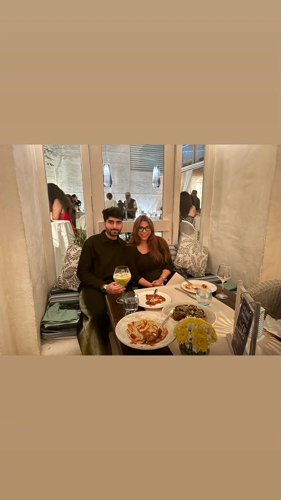
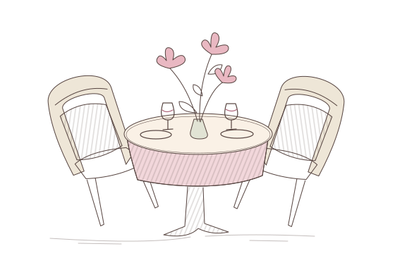
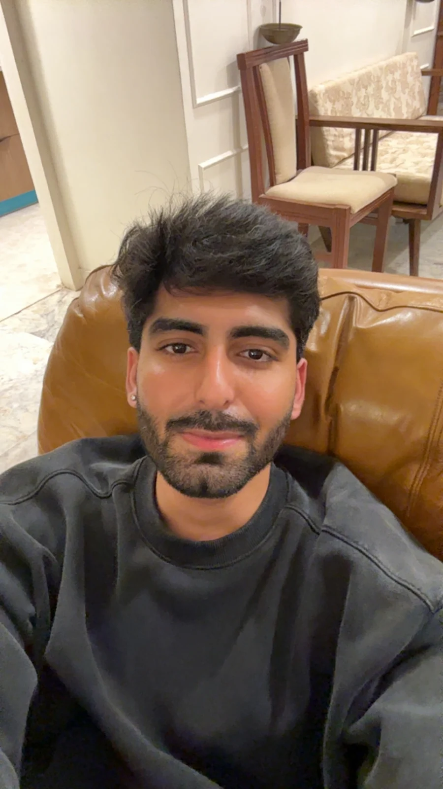

Our only photo together. For now.
October 31 · the last time I saw youa note for Devanshi

Pooja, since October 31, I’ve had so many things to tell you.
Some of them would be better over dinner.
FOR YOUR EYES, POOJA
Some things deserve more than a text.
This is one of them.
OCTOBER, IN MY CAMERA ROLL
One photo. Conversations since October 31.
Quite a few reasons to smile.

Our only photo together. For now.
October 31 · the last time I saw youa little something to make you smile
PRESS PLAY WHEN YOU HAVE A MOMENTThis space
is reserved
for us.
let’s fix the one-photo situation.
FOLDED NOTES
Three tiny notes. All true.
Tap one to turn it over.
a thought I keep coming back to
Even when you’re just here to bully me.
ANOTHER SEAT FOR TWO
You bring your appetite. I’ll bring the plan.
A few places I’d love to discover with my favourite foodie.
THE ONE ALREADY ON OUR LIST
The Lodhi · Lodhi Road
An evening of “you have to try this.” Inventive Indian food, a tasting menu to take our time over, and an optional wine pairing.
Heart a few favourites. We’ll make a day of it.
PICK AN AFTERNOON
Three starting points.
Room for a little spontaneity.
HERITAGE + A SPECIAL DINNER
Sunder Nursery → Indian Accent
A gentle afternoon, then a table for two.A VERY IMPORTANT TASTING MISSION
Natraj → Jalebi Wala → Kuremal
Three tastes of Old Delhi. Sharing encouraged.YOUR OUT-OF-OFFICE PLAN
Lodhi Garden → Captain’s Cellar
An easy walk, wine and a proper catch-up.
your date, apparently.THE PART I’M REALLY LOOKING FORWARD TO
I’m really glad I met you, Devanshi.
Let’s make some more memories.